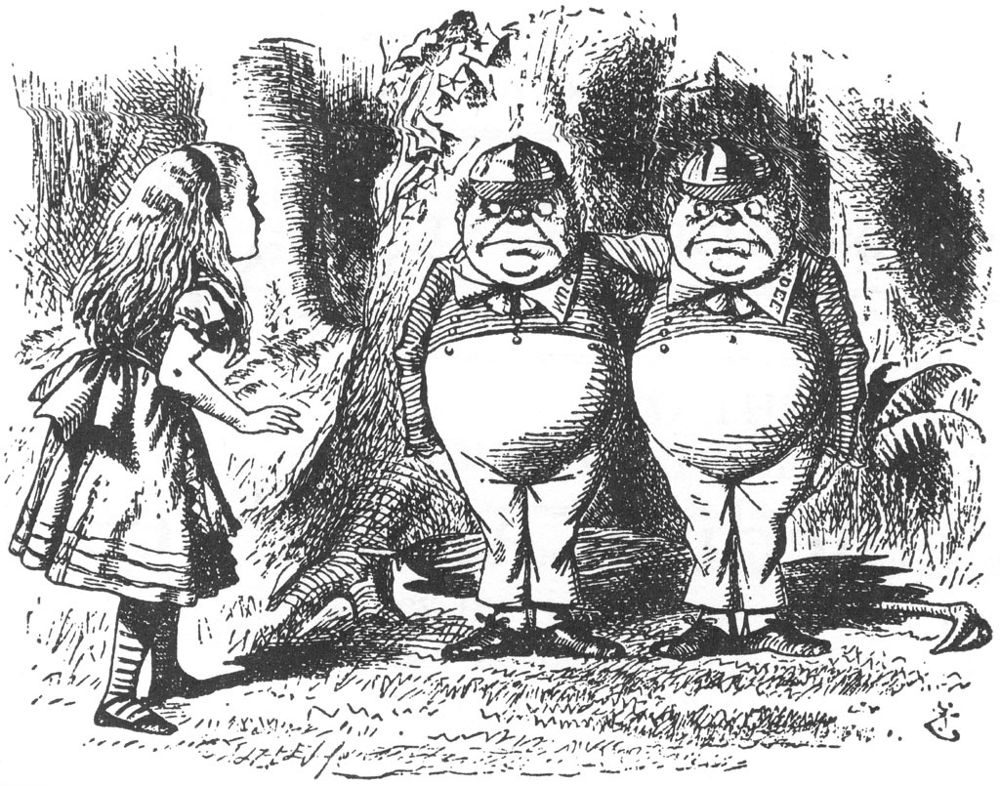
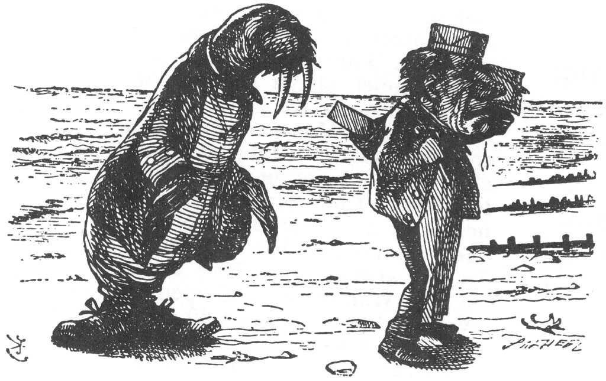
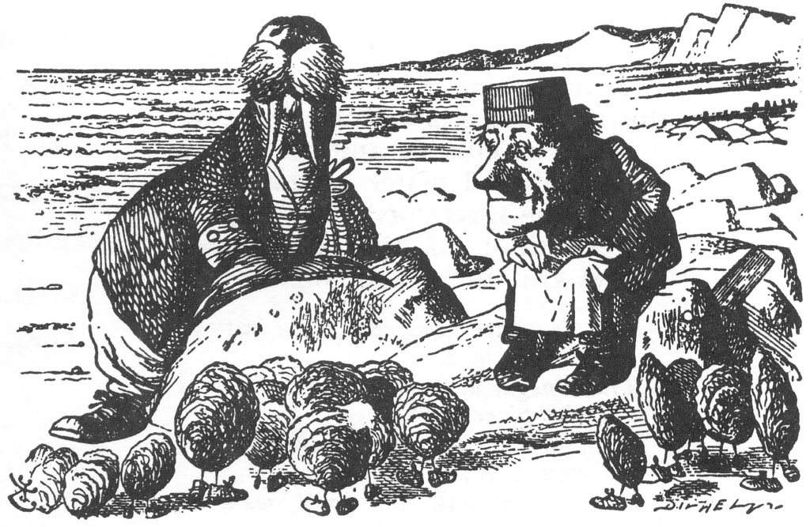
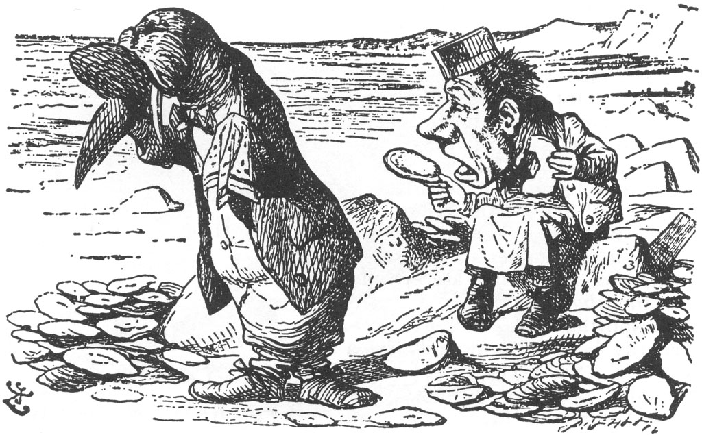
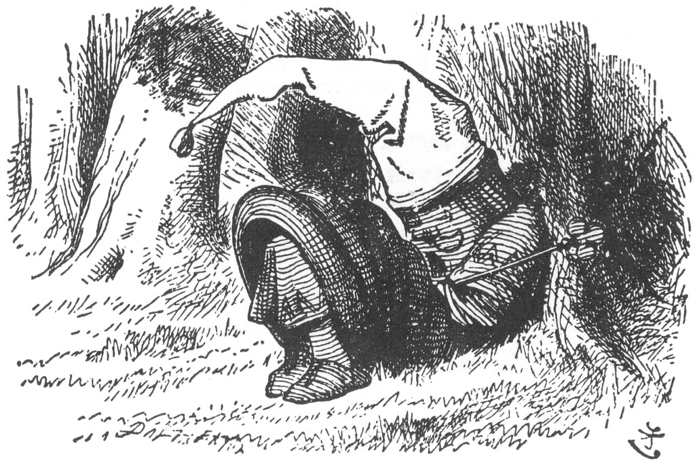
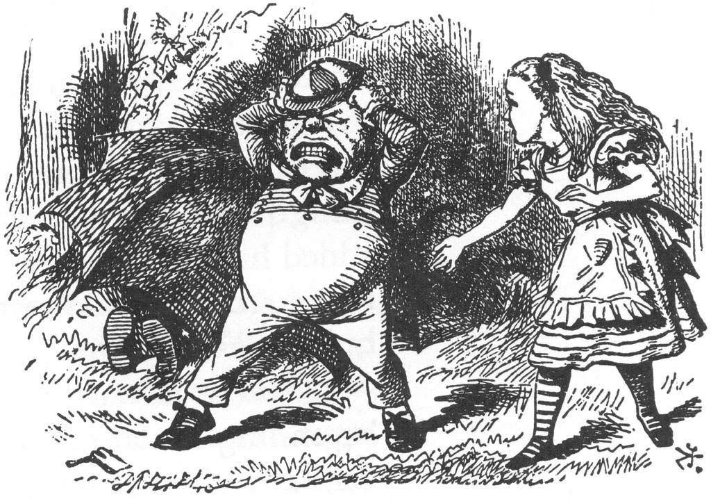
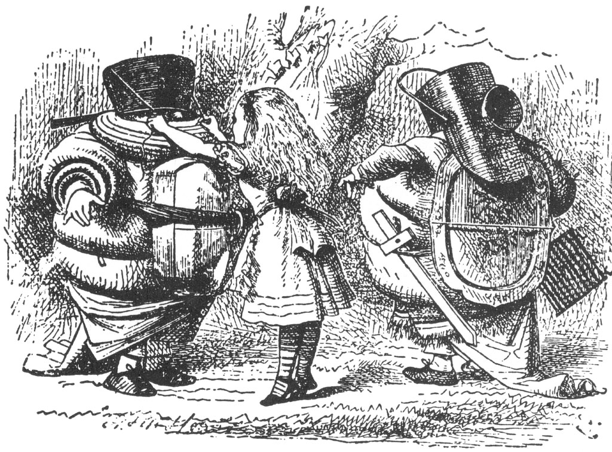

Kollarını birbirlerinin omuzlarına atmış, bir ağacın altında öylece duruyorlardı; Alice daha ilk anda hangisinin hangisi olduğunu anlamıştı; çünkü birinin yakasına “DİZ” diğerinin yakasına “DİK” işlenmişti. “Galiba ikisinin yakasının arkasında da ‘TUMBA’ yazılı,” dedi Alice kendi kendine.
O kadar kımıltısız duruyorlardı ki, Alice bir an onların canlı olduğunu unutup, enselerinde “TUMBA” yazıyor mu diye bakmak üzere tam arkalarını dolanacakken, bir anda “DİZ” yazılı olanından çıkan bir sesle irkildi.
“Balmumundan heykel olduğumuzu sanıyorsan, parasını ödemen gerektiğini bilirsin. Balmumu heykeller bedava seyredilsinler diye yapılmazlar. Asla olmaz!”
“Tam tersine,” diye ekledi, yakasında “DİK” işlemesi olanı, “canlı olduğumuzu düşünüyorsan, o zaman da konuşman gerekir.”
“Gerçekten çok özür dilerim.” Alice’in tek söyleyebildiği bu olmuştu, çünkü o anda eski bir şarkının sözleri, tıpkı bir saatin tik takları gibi kafasında çınlayıp duruyordu, şarkıyı yüksek sesle mırıldanmaktan kendini alıkoyamadı...

Tumbadik ile Tumbadız
Karar kıldılar bir meydan savaşına
Tumbadik dedi ki Tumbadız’a
Ne yaptın benim o güzel gıcır çıngırağıma?
Derken devasa bir karga çıkageldi,
Katran karası üstüyle
Öyle korktu ki iki kahraman da
Sünger çektiler dövüşlerinin üstüne
“Ne düşündüğünü biliyorum,” dedi Tumbadız, “fakat öyle değil, asla olmaz.”
“Tam tersine,” diye devam etti Tumbadik, “eğer öyle olsaydı, öyle olabilirdi; ola ki öyle olsaydı, öyle olacaktı; ama öyle olmadığından öyle değil. İşte işin mantığı bu.”
“Kendi kendime soruyordum,” dedi Alice kibarca, “acaba bu korudan çıkmanın en kısa yolu nedir? Hava kararıyor. Lütfen bana yolu söyler misiniz?”
Ne ki bu iki tıknaz adam yalnızca birbirlerine bakıp sırıttılar.
İki kocaman okul çocuğuna o kadar benziyorlardı ki, Alice elinde olmadan parmağıyla Tumbadız’ı işaret edip, “Önce sen, çocuk!” dedi.
“Asla olmaz!” diye atılıp bağırdı Tumbadız ve anında da ağzını kapayıverdi.
“Şimdi sen!” dedi Alice, Tumbadik’e geçerek. “Tam tersine!” diye bağırmaya başlamaktan başka bir şey yapmayacağından emin ola ola, nitekim öyle de yaptı Tumbadik.
“Sen yanlış başladın!” diye bir çığlık kopardı Tumbadız. “Bir ziyaret sırasında söylenecek ilk söz, ‘Nasılsınız?’ deyip tokalaşmaktır!” İşte tam bu sırada iki kardeş birbirlerine sarıldılar, boşta kalan ellerini de Alice ile tokalaşmak üzere uzattılar.
Alice ikisinden birinin elini önce sıkmak istemedi, çünkü diğerinin duygularını inciteceğinden korkuyordu; bu sorunu aşmanın en iyi yolu olarak, ikisinin de elini aynı anda sıktı. Hemen ardından başladılar halka halinde dans etmeye. Bu Alice’e çok normalmiş gibi gelmişti (daha sonraları öyle hatırlıyordu), hattâ müzik çalmışına da çok şaşırmış değildi; bu müzik sanki altında dans ettikleri ağaçtan geliyor gibiydi ve (anlayabildiği kadarıyla) dallar tıpkı yayların kemanlara sürtülmesi gibi birbirlerine sürterek müzik yapıyordu.
“Ama kesinlikle şu çok komikti,” dedi Alice (daha sonraları bütün bu olup bitenleri ablasına anlatırken) “bu sırada ben de kendimi ‘İşte dönüyoruz dut ağaçlarının etrafında' şarkısını söylerken buldum. Ne zaman başladığımı bilmiyorum, ama sanki uzun zamandan beri söylüyor gibiydim!”
Diğer iki dansçı şişman olduklarından nefes nefese kalmaları uzun zaman almadı. “Bir dans için dört kez dönmek yeterli,” dedi Tumbadız soluk soluğa ve tıpkı başladıkları gibi aniden danstan ayrıldılar; aynı anda müzik de durdu.
Sonra da Alice’in elini bıraktılar ve bir süre öylece ona bakakaldılar: Tuhaf bir duraksama olmuştu, Alice daha şimdi dans ettiği insanlarla nasıl konuşmaya başlayacağını bilmiyordu. “Şimdi, ‘Nasılsınız?’ demek hiç yakışık almaz,” dedi Alice kendi kendine, ”bu aşamayı çoktan geçtik gibi.”
“Umarım, çok fazla yorulmadınız,” dedi en sonunda.
“Asla olmaz. Sorduğunuz için çok teşekkür ederiz,” dedi Tumbadız.
“Size çok minnettarız!” diye ekledi Tumbadik. “Şiir seversiniz, di mi?”
“Ee-vet, çok... yani bazılarını,” dedi Alice kuşkuyla. “Bu korudan çıkmak için hangi yöne gitmem gerekiyor. Söyler misiniz bana?”
Tumbadik, Alice’in sorusunu pek dikkate almadan kocaman gözleriyle ciddi ciddi Tumbadız’a bakarak, “Ona neyi okusam?” diye sordu.
“‘Mors ile Dülger’ en uzun olanı,” dedi Tumbadız, kardeşine sevgiyle sarılarak. Anında başladı Tumbadik:
“Parıl parıl parlıyordu...”

Alice, tam burada araya girmeye kalkıştı. “Eğer çok uzunsa,” dedi elinden geldiğince kibar bir şekilde. “Önce, lütfen söyler misiniz, hangi yola...”
Tumbadik nazikçe gülümsedi ve yeniden başladı.
“Parıl parıl parlıyordu güneş denizde,
Parlıyordu tüm kudretiyle:
Olsun diye deniz ışıl ışıl ve çarşaf gibi
Uğraşıyordu güneş var gücüyle...
Olacak şey de değildi bu hani
Gecenin böyle bir yarısında.
Parlıyordu ay o asık suratıyla,
Çünkü oydu ki düşüncesi
Olmamalıydı güneş burada böyle
Bitince gün sonunda işi...
‘Yaptığı şey kabalık değil de ne?’ dedi ay,
Gelip de bozması böyle eğlenceyi!’
Deniz ıslaktı alabildiğine ıslak,
Kumlar ise kupkuru.
Göremezdiniz bir bulut:
Yoktu bulut gökte çünkü.
Yoktu üstümüzde uçuşan kuşlar:
Uçacak kuş yoktu çünkü...
Mors ile Dülger
Yürüyorlardı öylece yan yana;
Süzülürken yanaklarından gözyaşları.
Bakınca sonra da onca kuma:
‘Ah bir temizlenseydi şu kumlar,’
Dedi ikisi de, ‘Olurdu hani ne harika!’
Yedi süpürgeli yedi hizmetçi
Süpürseler burayı altı ay boyunca,
‘Ne dersin?’ diye sordu Mors
Temizleyebilirler mi sence?'
Akıtırken şarıl şarıl gözyaşlarını
Dedi ki Dülger, ‘Pek mümkün değil bence.’
Yalvarıp yakarmadaydı Mors
‘Ey İstiridyeler, bize katılsanıza!
Hoş bir gezinti olsun, güzel bir hoşbeş,
Şu canım tuzlu kumsal boyunca:
Dört elimiz yeter de artar bile
Uzanmaya tek tek her birinize.’
Şöyle bir baktı ona içlerinden en yaşlıları,
Etmedi ne ki tek kelime bile:
Göz kırptı sadece en yaşlı İstiridye.
Salladı o ağırca başını bir de...
Belliydi her hareketiyle
İstemiyordu yatağından ayrılmayı hiç de.

Acele etti ne ki içlerinden dört genci,
Kaçırmak istemezlerdi ki ziyafetleri:
Fırçalanmıştı elbiseleri, yıkanmıştı yüzleri.
Ayakkabılarıysa temiz ve ışıl ışıl boyaları...
Olacak şey değildi bu hani,
Yoktu ki İstiridyelerin ayakları.
İzledi dört genci dört başka İstiridye,
Ardından bir dört genç daha;
Geldiler sonra da acele acele sürüyle,
Kum gibiler bitmezler ki saymakla...
Zıpladılar hepsi köpük köpük dalgalardan,
Sürünüp giderek kıyıya daha daha.
Mors ile Dülger
Yürüdüler bir mil civarınca,
Dinleniverdiler bir kayada
Boylarına uyanı bulunca:
Minik İstiridyeler de durdular
Beklediler öylece bir sıra boyunca.
‘Zamanı geldi,’ dedi Mors,
‘Ele alalım bakalım şu konuları:
Kunduraları... kadırgaları... kırmızı balmumunu...
Lahanaları... ve de kralları...
Neden deniz böyle cayır cayır yakıcı...
Ve var mı acaba domuzların kanatları?’
‘Ama bekleyin biraz,’ diye haykırdı İstiridyeler
‘Başlamadan önce konuşmanıza
Kimimiz kaldık öylece soluk soluğa
Üstelik pek şişmanız da!’

‘Aceleye ne gerek?’ dedi Dülger.
Pek müteşşekir kaldılar bu yüzden onlar da.
‘Bir somun ekmek,’ dedi Mors,
‘İşte tek ihtiyacımız bu aslında:
Bir de biber ve sirke
Ne güzel de gider yanında...
Hazırsanız, şimdi sevgili İstiridyeler,
Başlayabiliriz hemen yemeye de.’
Mosmor kesilmişlerdi İstiridyeler
‘Ama bizi mi!’ diye koparırken yaygarayı
Olur muydu hiç, bunca kibarlıktan sonra
Yapmak böyle fena bir şeyi
Dedi ki Mors, ‘Doğrusu gece de ne hoş.
Beğendiniz mi, peki manzarayı?’
‘Gelmeniz ne büyük bir incelikti!
Ve de ne güzelsiniz bu kez!’
Dülger de ekledi sadece
‘Bir dilim daha kes
Kulaklarına bir baktırsan diyorum,
Tekrar ettirdin bana bak iki kez!’
‘Ayıp ettik gibi geliyor bana,’ dedi Mors
Oynamakla böyle bir oyunu onlara,
Sürükleyerek zavallıları böyle uzaklara,
Getirmekle onları buralara koştura koştura.’
Dülger de ekledi sadece,
‘Pek kalınca sürülmüş şu tereyağı ekmeklere!’
‘Bakın nasıl da ağlıyorum sizin için,’ dedi Mors
‘Ne de çok iyi anlıyorum her birinizin halini.’
Gözyaşları ve hıçkırıklar içinde
Seçip aldı içlerinden en büyükçelerini,
Silerken mendiliyle
Şarıl şarıl akan gözyaşlarını.
'Ey İstiridyeler,” dedi Dülger,
‘Doğrusu koşar adım geldiniz hepiniz bir bir!
Ne dersiniz dönelim mi eve şimdi seke seke?’
Veremedi ne ki cevap hiçbiri...
Çok da tuhaf değildi bu hani, çünkü
Midelerine indirmişlerdi hepsini bir bir’
“Mors’u daha çok sevdim,” dedi Alice, “çünkü zavallı istiridyeler için birazcık yine o üzülüyor.”
“Yine de o, Dülger’den daha fazla yemiş,” dedi Tumbadik. “Tam tersine, Dülger kaç tane yediğini görmesin diye, mendilini önünde tutuyor.”
“Bu alçaklık!” dedi Alice, haklı olarak öfkelenmişti. “O zaman ben en çok Dülger’i seviyorum... Eğer Mors kadar çok yemediyse.”
“Ama o da toplayabildiği kadarıyla yedi,” dedi Tumbadız.
Bu içinden çıkılması zor bir bilmeceydi. Bir süre duraksadıktan sonra, “Peki, tamam ikisi de çok kötü karakterler...” Alice birden, yakınlarındaki korudan gelen, kocaman buharlı bir trenin puf puf sesine benzer bir sesle irkildi; yabani bir hayvanın sesi olabileceğinden korkmuştu. “Buralarda aslan ya da kaplan var mı?” diye sordu ürkekçe.
“Bu Kızıl Kral'ın horlamasından başka bir şey değil,” dedi Tumbadik.
“Gel, ona bir bakalım!” diye bağırdı iki kardeş; biri Alice’in bir elinden diğeri öbür elinden tutup, onu alıp Kral’ın uyuduğu yere doğru götürdüler.
“Çok hoş bir görüntü, değil mi?” dedi Tumbadız.

Alice, dürüst bir çocuk olduğundan, pek öyle olduğunu söyleyemezdi. Kral’ın başında püsküllü kırmızı uzun bir külah vardı; perperişan bir yığın gibi çöküp kalmıştı; yüksek sesle horlayıp duruyordu; Tumbadız’ın deyimiyle neredeyse gırtlağı çatlayacaktı.
Çok ince ve düşünceli bir kızcağız olan Alice, “Umarım bu ıslak çimende üşütmez,” dedi.
“Şu an düş görüyor,” dedi Tumbadik. “Sence düşünde ne görüyor?”
“Kim bunu bilebilir ki!” dedi Alice.
“Tabii ki seni\” diye haykırdı Tumbadik, zafer kazanmışçasına ellerini şaplatarak. “Seni düşünde görmeseydi eğer, nerede olurdun dersin?”
“Şu an olduğum yerde tabii ki,” dedi Alice.
“Olmazdın!” diye karşılık verdi Tumbadik küçümsercesine. “Hiçbir yerde olmazdın. Sen hepsi hepsi onun düşündeki bir şeysin!”
“Ola ki Kral uyanacak olsa,” diye ekledi Tumbadız, “bir mum gibi... o dakika... sönerdin!”
“Sönmezdim!” diye avazı çıktığınca bağırdı Alice öfkeye kapılarak. “Üstelik ben onun düşündeki bir şeysem, siz nesiniz o zaman?”
“Aynısı!” dedi Tumbadız.
“Tıpkısının aynısı!” diye haykırdı Tumbadik.
Öyle bir bağırmıştı ki, “Şişşt! Kusura bakmayın ama bu kadar gürültü çıkarırsanız, onu uyandırırsınız,” demekten kendini alıkoyamadı Alice.
“Bak, sen onun düşündeki şeylerden biri olduğun sürece,” dedi Tumbadız, “onu uyandırmaktan söz etmenin hiçbir anlamı yoktur. Sen de biliyorsun ki gerçek değilsin.”
“Ben gerçeğimi” dedi Alice ve başladı ağlamaya.
“Ağlayarak kendini daha fazla gerçek yapamazsın,” diye belirtti Tumbadik. “Bunda ağlanacak hiçbir şey yok.”
“Eğer ben gerçek olmasaydım, böyle ağlayamazdım,” dedi Alice. Her şey öyle saçma geliyordu ki ona, bir yandan gözyaşları akarken bir yandan da gülüyordu.
“Umarım bunların gerçek gözyaşları olduğunu sanmıyorsundur,” diye lafa girdi Tumbadız, küçümser bir ses tonuyla.
“Biliyorum, bunlar saçma sapan konuşuyorlar,” dedi Alice kendi kendine, “bunun için ağlamak aptalca.” Bunun üzerine gözyaşlarını sildi ve olabildiğince neşeli bir şekilde, “Sahi, bu korudan çıksam iyi olacak, hava gerçekten çok kararıyor. Sizce yağmur yağacak mı?” diye sordu.
“Tumbadız, kardeşininkiyle beraber üzerlerine kocaman bir şemsiye açtı ve başını kaldırıp yukarı baktı. “Yok, sanmıyorum,” dedi. “En azından... bunun altında yağmaz. Asla olmaz.”
“Peki, dışarıda yağabilir mi?”
“Yağabilir... eğer canı isterse,” dedi Tumbadik. “Tam tersine hiçbir itirazımız olmaz.”
“Bencil şeyler!” dedi Alice kendi kendine. Tam “İyi geceler,” deyip onlardan ayrılmak üzereydi ki, birden Tumbadız şemsiyenin altından fırlayıp onu bileğinden yakaladı.
“Şunu görüyor musun?” dedi, öfkeden tıkanan bir ses tonuyla; tir tir titreyen parmağıyla ağacın altındaki küçük beyaz bir şeyi işaret ediyordu, bir anda gözleri kocaman açılmış ve sapsarı kesilmişti.
“Basit bir çıngırak,” dedi Alice küçük beyaz şeyi dikkatlice inceledikten sonra. “Çıngıraklı yılan değil yani,” diye ekledi telaşla,

Tumbadız’ın korktuğunu düşünerek. “Sadece eski bir çıngırak... pek bir eskimiş ve kırık.”
“Öyle olduğunu ben de biliyorum!” diye bağırdı Tumbadız, de-lirmişçesine ayaklarını yere vurup saçlarını yolarak. “Tabii ki bozulmuş!” O anda dönüp Tumbadik’e baktı, Tumbadik de yere oturmuş şemsiyenin altına gizlenmeye çalışıyordu.
Alice elini Tumbadız’ın omzuna koyup, “Eski bir çıngırak için bu kadar kızmana hiç gerek yok,” dedi sakinleştirici bir ses tonuyla.
“Eski değil!” diye bağırdı Tumbadız öncekinden çok daha büyük bir öfkeyle. “Yeni... Daha dün almıştım... A benim cici GICIR ÇINGIRAĞIM!” Sesi artık düpedüz çığlığa dönüşmüştü.
Bütün bunlar olup biterken, Tumbadik içinde kendisi olduğu halde şemsiyeyi kapatmak için elinden geleni yapıyordu; bu öyle tuhaf bir çabaydı ki, Alice’in dikkati öfkeli kardeşten ona yönelmişti. Ne var ki Tumbadik başarılı olamadı; en sonunda şemsiyenin içinde kundaklanmış bir şekilde yana devrildi, yalnızca başı dışarıda kalmıştı; orada öylece uzanmış, ağzını ve o kocaman gözlerini açıp kapamaktan başka bir yapamıyordu. “Ne çok balığa benziyor,” diye düşündü Alice.
“Şimdi bir dövüşe varsın, di mi?” dedi Tumbadız daha sakin bir ses tonuyla.
“Galiba,” diye karşılık verdi öteki, asık suratıyla sürünüp şemsiyenin altından çıkarken. “Yalnız, bir şartla. O giyinmemize yardım ederse,” dedi Alice’i kastederek.
Bunun üzerine iki kardeş el ele tutuşup korudan içeri girip, bir dakika sonra elleri kolları dolu bir şekilde geri geldiler. Getirdikleri şeyler arasında neler yoktu ki; Uzun yastıklar, battaniyeler, şömine önü kilimleri, masa örtüleri, servis kapakları ve kömür kovaları. “Umarım ipleri birbirine tutturup bağlamada ustasındır,” dedi Tumbadız. “Burada gördüğün şeylerin hepsi öyle ya da böyle kullanılmak zorunda.”
Alice böylesi boşuna bir telaşla ömründe hiç karşılaşmadığını daha sonraları anlatacaktı... İki kardeşin oraya buraya koşuşturmaları... üzerlerine giydikleri onca şey... ipleri bağlayıp düğmeleri iliklemede ona verdikleri onca zahmet. “Bunlar gerçekten hazırol-duklarında her şeyden çok koca bir tomar eski giysiye dönecekleri” dedi Alice kendi kendine. Bir yandan da kellesi uçurulmasın diye Tumbadik’in boynunun etrafına uzun yastıklardan birini sarmaya uğraşıyordu.
“Bilirsin ya,” diye ekledi Tumbadik pek bir ciddi ses tonuyla, “bir dövüş sırasında kellesinin uçurulması insanın başına gelebilecek en ciddi şeydir.”
Alice bir kahkaha attı, fakat onu incitirim korkusuyla anında öksürme numarası yaptı.
“Çok mu solgun görünüyorum?” dedi Tumbadız miğferini bağlatmak üzere ona doğru gelirken (o şeye miğfer diyordu, ama daha çok tavaya benziyordu.)
“Şey... Evet... Birazcık,” diye yanıtladı Alice kibarca.
“Ben genelde cesur biriyim,” diye devam etti, Tumbadız, alçak bir ses tonuyla “ama bugün başımın ağrıyacağı tuttu.”
“Benim de dişim ağrıyor!” dedi onun söylediklerine kulak misafiri olan Tumbadik. “Ben senden daha kötüyüm!”
“O zaman bugün dövüşmeseniz daha iyi olacak,” dedi Alice, onları barıştırmak için bunun iyi bir fırsat olduğunu düşünerek.
“Birazcık dövüşelim, ama o kadar uzun olmasa da olur,” dedi Tumbadız. “Şu an saat kaç?”
Tumbadik saatine baktı ve “Dört buçuk,” dedi.
“Hadi altıya kadar dövüşelim, sonra da yemek yiyelim,” dedi Tumbadız.
“Çok iyi,” dedi diğeri üzülerek: “O da bizi izleyebilir... yalnız bana çok yaklaşmasan,” diye ekledi. “Ben genelde çevremde gördüğüm her şeye vururum... gerçekten heyecanlanırsam.”
“Ben de elimin eriştiği her şeye vururum,” diye bağırdı Tumbadız, “ister göreyim, ister görmeyeyim!”

Alice kahkahalarla güldü. “Bu durumda sürekli ağaçlara vurmanız gerekir,” dedi.
Tumbadız pek bir memnun ifadeyle etrafına bakıp, “Biz bu dövüşü bitirene kadar sanmam ki bu civarda geride tek bir ağaç kalsın!” dedi.
“Bütün bunlar da bir çıngırak yüzünden!” dedi Alice, böyle saçma sapan bir şey yüzünden dövüştükleri için onları birazcık utandırmak amacıyla.
“O kadar umurumda olmazdı,” dedi Tumbadız, “yeni bir çıngırak olmasaydı.”
“Keşke şu devasa karga şimdi bir gelse!” diye içinden geçirdi Alice.
“Biliyorsun, sadece bir kılıç var,” dedi Tumbadız kardeşine: “ama sen de şemsiyeyi kullanabilirsin... O da epeyi sivri. Yalnız hemen başlayalım. Hava gittikçe kararıyor.”
“Daha da kararıyor,” dedi Tumbadik.
Derken ortalığı öyle bir karanlık bastırdı ki, Alice, şimşekler kopup gökten yağmur boşanacağını düşündü bir an. “Şu kocaman kapkara buluta bir bak!” dedi. “Nasıl da hızlı geliyor! İnanmıyorum, baksana kanatları da var!”
“O karga!” diye tiz sesiyle yaygarayı kopardı Tumbadız dehşet içinde: Bir anda iki kardeş de tabanları yağlayıp ortadan kayboldular.
Alice, korunun içine doğru birazcık koşup, kocaman bir ağacın altında durdu. “Burada bana asla bir kötülük edemez. O kocaman gövdesiyle ağaçların altına giremez. Keşke şu kanatlarını da böyle çırpmasa... Koruda kasırga estiriyor... İşte şurada da rüzgarda savrulup gelen bir şal var!”